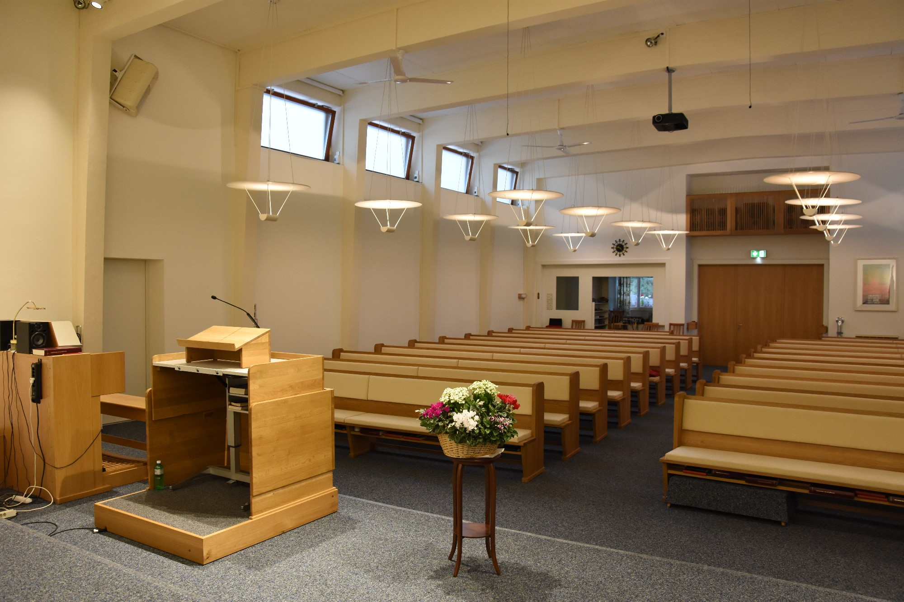

«Denn einen anderen Grund kann niemand legen, ausser dem, der gelegt ist, welcher ist Jesus Christus.»
1. Korinther 3,11
Ihr seid alle herzlich bei uns willkommen
Es gibt keine Maskenpflicht und sonstige Beschränkungen mehr für Gottesdienste. Es sind alle herzlich willkommen. Der Gottesdienst wird weiterhin auf Youtube live übertragen.
YouTube Kanal
Auf unserem Kanal finden Sie Predigten und Gottesdienste unserer Gemeinde seit März 2020. Klicken sie auf das folgende Bild:
Aktuelle Predigt
Jesus empfängt den heiligen Geist
Datum: 12.06.2022
Datum: 12.06.2022
Weitere Predigten sind im Predigtarchiv verfügbar.
Über Uns
Geschichtlicher Hintergrund
Mennonitische Glaubensgemeinschaft Basel-Holee
Als Mennonitengemeinde Basel-Holee gehören wir zu der „Täuferbewegung“, deren Anfang auf die Reformationszeit zurückgeht. Mitarbeiter von Ulrich Zwingli bestanden darauf, Zwinglis ursprünglichen Plan, die Abschaffung der Kindertaufe, durchzuführen. Nach ihrem Verständnis der Bibel ist Kirchenmitgliedschaft an einen persönlichen, freiwilligen Glauben an Jesus Christus gebunden. Dieser Glaube soll im eigenen Leben konkret umgesetzt werden.
Infolgedessen forderten sie auch die Trennung von Kirche und Staat. Als Folge dieser Glaubensüberzeugung wurden die „Täufer“ besonders in der Schweiz bis ins 18. Jahrhundert verfolgt; erst im 19. Jahrhundert wurde ihnen die Glaubens- und Versammlungsfreiheit gewährt. Als erster Kanton der Schweiz erlaubte ihnen Basel-Stadt im Januar 1847, ein „Bethaus“ zu erstellen. Seitdem treffen sich die Mitglieder und Gäste der Mennonitengemeinde in Basel regelmässig in der Holeestrasse 141 zum gemeinsamen Gottesdienst.
Dreieinigkeit Gottes
Die Einheit von Vater, Sohn und Heiliger Geist
Als Teil der Gesamtgemeinde Jesu Christ bekennen wir uns:
Zum dreieinigen Gott, dem Schöpfer aller Dinge, der sich als Vater, Sohn und Heiliger Geist geoffenbart hat.
Ausführungen dazu von Prof. Dr. theol. Jacob Thiessen zu "Dreieinigkeit Gottes"
Bibel
Bibel (Altes und Neues Testament)
Als Teil der Gesamtgemeinde Jesu Christ bekennen wir uns:
Zur ganzen Bibel als dem von Gott inspirierten, irrtumslosen Wort Gottes, die uns Massstab für Glauben, Lehre und Leben sein soll.
Ausführungen von Prof. Dr. theol. Jacob Thiessen zu "Zur Inspiration der Bibel"
Ausführungen von Prof. Dr. theol. Jacob Thiessen zu "Irrtumslosigkeit und Autorität der Bibel"
Kinder
Kinderstunde
Während dem Sonntagsgottesdienst bieten wir parallel eine Kinderstunde an. Biblische Geschichten werden den Kindern und Teenies altersgerecht vermittelt.
Kinderlager
In den Osterferien findet eine Kinderwoche in Zusammenarbeit mit der Heilsarmee statt.
Leben
Neues Leben durch den Glauben
Als Teil der Gesamtgemeinde Jesu Christ bekennen wir uns:
Zu einem neuen Leben, das jeder als Geschenk erhält, der nicht auf eigene Leistungen, sondern allein auf das Erlösungswerk, das Jesus Christus durch seinen Tod und seine Auferstehung vollbracht hat, vertraut.
Ausführungen von Prof. Dr. theol. Jacob Thiessen zu "Busse und Bekehrung"
Ausführungen von Prof. Dr. theol. Jacob Thiessen zu "Die neutestamentliche Taufe"
Gemeinschaft
Gemeinschaft der Gläubigen
Als Teil der Gesamtgemeinde Jesu Christ bekennen wir uns:
Zur Gemeinde Jesu Christi als Gemeinschaft aller, die an Jesus Christus glauben und durch ihn Frieden mit Gott und ein neues Leben empfangen haben.
Ausführungen von Prof. Dr. theol. Jacob Thiessen zu "Die Gemeinde, der Leib Christi"
Ausführungen von Prof. Dr. theol. Jacob Thiessen zu "Der biblische Glaube"
Wiederkunft Jesu
Das Wiederkehren von Jesus Christus
Als Teil der Gesamtgemeinde Jesu Christ bekennen wir uns:
Zur Wiederkunft Jesu Christi, der als gerechter Richter kommen wird, um für immer Frieden und Gerechtigkeit herzustellen.
Ziele
Unsere Hauptziele sind:
- Gemeinde Jesu im Sinn und auf der Grundlage der Bibel zu bauen.
- Dem Missionsauftrag Jesu zu erfüllen, indem Menschen in die lebendige Beziehung zu Jesus geführt und in der biblischen Lehre sowie im Glauben vertieft werden.
- Gemeinsam Gott mit geistlicher Musik zu loben.
- Gemeinschaft zu pflegen.
- Christen zu einem Leben des Dienstes für Gott und Menschen zu motivieren und anzuleiten.
Jugend
Auf Instagram sind wir zu finden unter: @holeejugend
Wer sind wir?
Wir sind eine Gruppe junger Menschen im Alter von 15 bis 30 Jahren und treffen uns normalerweise am 2. und 4. Samstagabend im Monat. Wir kommen aus Deutschland, der Schweiz und Frankreich und die meisten von uns sind Schüler oder Studenten.
Was wollen wir?
Jesus Christus steht im Zentrum unserer Treffen und wir wollen miteinander den Glauben an Ihn durch Gebet, Andacht, Gesang und Gemeinschaft leben.
Wie sieht eine Jugendstunde aus?
In der Regel machen wir eine Bibelarbeit oder hören Vorträge/Predigten zu verschiedenen aktuellen und relevanten Themen. Das offizielle Programm dauert etwa eine Stunde und anschließend pflegen wir lockere Gemeinschaft (Snacks, erzählen, lachen, diskutieren, kicken etc.). Außerdem schauen wir auch mal gemeinsam einen Film an, gehen Schlittschuh laufen oder Fußball spielen, beteiligen uns an Missionsaktionen usw.
Finanzielles (Spendenkonti)
1. Gemeinde Konto
Mennoniten-Gemeinde
Holeestrasse 141
CH-4054 Basel
UBS Schweiz AG
Clearing-Nr.: 233
IBAN: CH27 0023 3233 2021 0628 0
BIC: UBSWCHZH80A
Wer anonym spenden will, verwendet bitte den Einzahlungsschein
2. Förderverein Mennoniten Basel (in der Schweiz steuerlich abziehbar)
Förderverein Mennoniten Basel
Holeestrasse 141
4054 Basel
UBS Schweiz AG
Clearing-Nr.: 233
IBAN: CH46 0023 3233 2057 9040 P
BIC: UBSWCHZH80A
Einzahlungsschein des Fördervereines
3. Euro Konto Frankreich
Mennonitengemeinde Basel Holee
M Goldschmidt Pierre
Leihouse
68480 Biederthal
Credit Agricole
Alsace Vosges
BIC: AGRIFRPP872
IBAN: FR76 1720 6005 3059 0902 4301 012
Links
Links zu uns nahestehenden Institutionen
Die STH Basel ist eine bibeltreue Alternative zur historisch-kritischen Theologie der Universitäts-Fakultäten
Das Haus der Bibel im Zentrum von Basel für bibeltreue christliche Literatur
Wöchentliche Termine
- Montag: Posaunenchor
- Dienstag: Strickkränzli
- Mittwoch 19.00 Uhr: Bibel- und Gebetsstunde (im Wechsel)
- Mittwoch 20.15 Uhr: Gemischter Chor
- Samstag 18.00 Uhr: Jugendgruppe
- Sonntag 9.30 Uhr: Gebet
- Sonntag 10.00 Uhr: Gottesdienst
Anreise
Unsere Gemeinde befindet sich an der Holeestrasse 141 in 4054 Basel, Schweiz. Hier der Standort auf Google Maps.
Kontakt
- Herr Jacob Thiessen
- Tel: (+41) 061 461 58 56